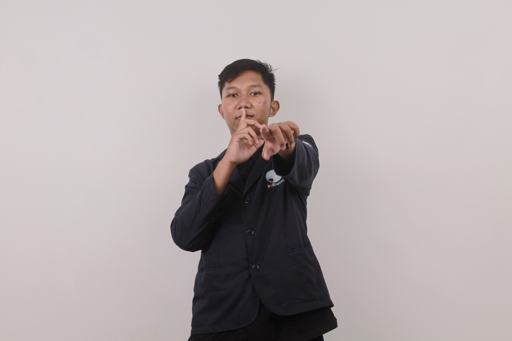
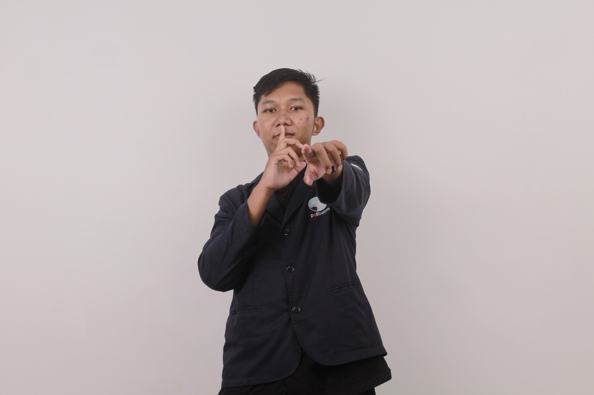
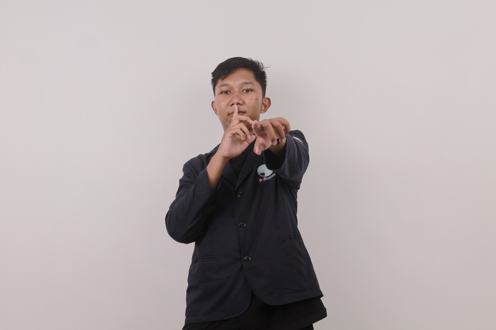
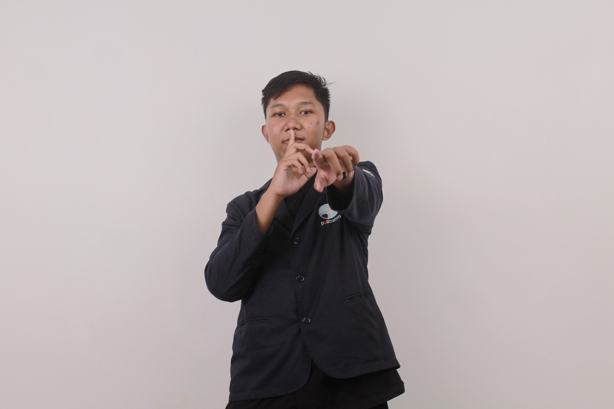

A Software Engineering Student at Politeknik Negeri Batam.
I am a student majoring in Information Engineering, specializing in Software Engineering Technology at Batam State Polytechnic. My passion for technology—especially in the field of computers—has been growing since middle school. Back then, I joined a robotics extracurricular program, which sparked my interest in programming and hardware integration. In high school, I took this passion further by developing a line follower robot as part of my scientific writing project, blending creativity with technical problem-solving.
This project aims to develop an internal website for the SHILAU unit, a unit on campus that is responsible for promoting and selling services, training, research products and other services to the community.
Degree: D4 - Teknik Rekayasa Perangkat Lunak
Years: 2021 - Present
Focus on software engineering principles, UI/UX design, and full-stack web development.
Jurusan: MIPA
Years: 2021 - 2024
Email
hsn112017@gmail.com
Phone
+62 812-7521-1165
Location
Batam, Indonesia